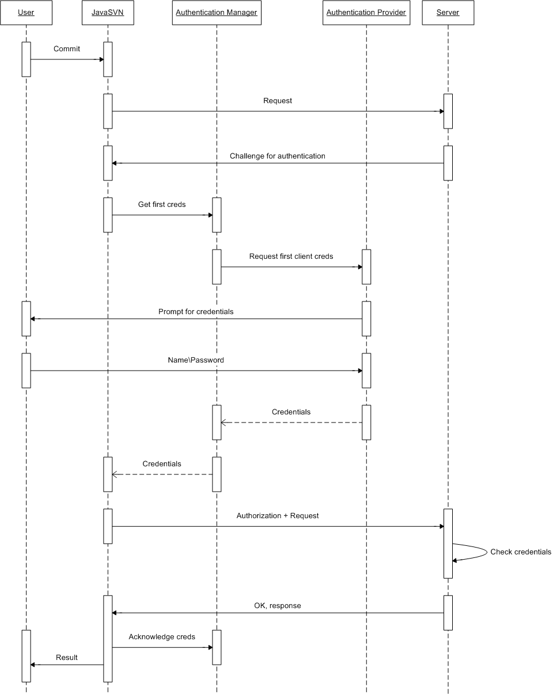
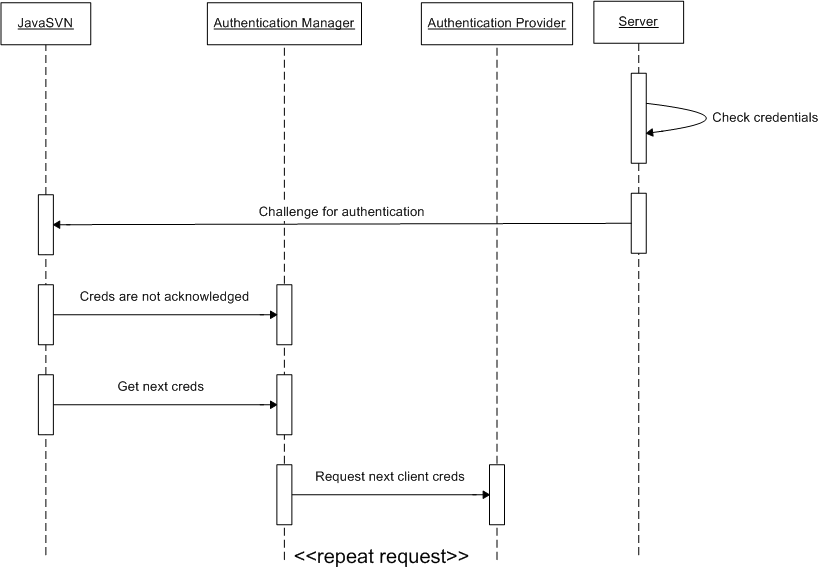

| Table of contents |
|---|
Authentication manager
When an anonymous access to a repository is not permitted, a server asks for authentication credentials. For these purposes JavaSVN uses authentication managers. Such managers implement the ISVNAuthenticationManager interface. The previous article describes how to create an SVNRepository driver for working with a repository. After such a driver has been instantiated you provide an authentication manager in the following way:
try {
...
ISVNAuthenticationManager authManager;
...
SVNURL url = SVNURL.parseURIDecoded("svn://host/path_to_repository_root/inner_path");
SVNRepository repository = SVNRepositoryFactory.create(url, null);
//set an auth manager which will provide user credentials
repository.setAuthenticationManager(basicAuthManager);
...
} catch (SVNException e) {
//handle exception
}
If you don't provide an authentication manager and a server does not reject anonymous requests (for example, a server can be world-readable, and you are performing a checkout) everything should go well. But if it's not so and the server challenges you for credentials, you will certainly get an exception since there's no authentication manager provided.
Authentication manager usage
The whole authentication manager is based on the following four logical blocks:

On the diagram each logical block is followed by a corresponding interface (in a bold font) provided within the auth package. These blokcs are like pinions of a gear, in our case - of an authentication gear that is used within JavaSVN. Such a structure allows you to replace different blocks while the authentication manager itself remaining the same. Let's look at those blocks closer.
Authentication Provider
This block is represented by the ISVNAuthenticationProvider interface in JavaSVN authentication API. It's responsible for providing user authentication credentials of different kinds. Such providers are passed to an authentication manager. Let's look at how JavaSVN acts when it receives a server challenge for authentication.

The above sequence diagram illustrates a commit process performed by JavaSVN.
- A user initiates a commit request. JavaSVN sends the request to the server.
- The server receives the request and answers with a challenge for authentication.
- JavaSVN receives the server's challenge and asks the auth manager provided by the client for the first credentials. Here we assume that this is the first time credentials are requested, and since there can be probably more than one credentials for the same authentication realm, JavaSVN starts with the first credentials.
- The auth manager invokes its auth provider asking for the first credentials.
- The auth provider returns user credentials to the manager. In our example it prompts a user for login\password. However there can be other implementations: for example, a provider which fetches credentials from the standard Subversion auth storage. Actually, it's up to a user.
- The auth manager returns the credentials to the caller. Surely, this diagram is a bit relative: the auth manager (as well as auth provider) is also a part of JavaSVN, but is shown separately only for more clear demonstration.
- JavaSVN sends the request with credentials to the server.
- The server receives the credentials, checks them for validity. If the user is authorized seccessfully, the server carries out the request and sends back a response.
- So, if negotiation is successful JavaSVN says to the auth manager that the provided credentials have been acknowledged by the server. Then returns the control back to the caller.
But imagine, that the user has mistyped his password.
- In this case the server rejects the credentials and challenges for authentication again.
- JavaSVN receives an error message and says to the auth manager that the provided credentials are not acknowledged by the server.
- Then JavaSVN asks the manager for the next credentials and the process described above repeats once again.

JavaSVN keeps on asking the auth manager for the next credentials until either the server acknowledges some of them or the auth provider (hence the auth manager, too) runs out of credentials (returns null). In the latter case JavaSVN throws an SVNAuthenticationException.
There may be more than one auth provider registered in the auth manager (like in the default auth manager implementation which is discussed later). Or maybe some wouldn't use providers at all, combining an auth manager and auth provider into a single class. It depends on a concrete implementation.
Kinds of authentication credentials
The following is a table of different kinds of auth credentials and subclasses of SVNAuthentication which correspond to them:
| Kind | Class representation | Field of usage |
| PASSWORD | SVNPasswordAuthentication | login:password authentication (svn://, http:// ) |
| SSH | SVNSSHAuthentication | In svn+ssh:// tunneled connections |
| SSL | SVNSSLAuthentication | In secure https:// connections |
| USERNAME | SVNUserNameAuthentication | With file:/// protocol, on local machines |
These kinds are provided by JavaSVN to the credentials-getter methods of an authentication manager. And an auth manager provides them to its auth provider. Those SVNAuthentication instances which are returned back from an auth manager must correspond to the kind passed. That means that, for example, if credentials of type PASSWORD are requested, an auth manager must return an SVNPasswordAuthentication object, and so on.
According to an access scheme JavaSVN passes an appropriate kind to an auth manager. For example, if svn+ssh:// scheme is used, JavaSVN passes the SSH kind to an auth manager.
Authentication Storage
This block is represented by the ISVNAuthenticationStorage interface. JavaSVN implements this interface as a run-time in-memory storage for credentials of different kinds. In our previous example the auth provider can store login\password provided by the user in such a storage, so that later credentials (acknowledged by the server and stored in the run-time storage) may be reused without prompting the user again.
Proxy Manager
If an authentication manager provides a non-null proxy manager, JavaSVN interacts with a target server through a proxy server represented by the proxy manager.
SSL Manager
This block is represented by the ISVNSSLManager interface. When a secured http connection is used (https:// ), and this manager is not null, it's used by JavaSVN to create SSL encrypted sockets (i.e. such a manager provides an appropriate SSL context). However if no SSL manager is provided by an auth manager, JavaSVN uses a default one which, of course, knows nothing of user certificate files. But this default one will provide an SSL context for creating SSL sockets as well as receive server certificate file.
Default ISVNAuthenticationManager implementations
JavaSVN provides the following implementations of ISVNAuthenticationManager:
- BasicAuthenticationManager
- DefaultSVNAuthenticationManager
DefaultSVNAuthenticationManager
This implementation has the following features:
- Can use an on-disk auth storage located in the default Subversion run-time configuration are or in a specified directory. It's able to cache credentials in that directory.
- Uses a run-time in-memory storage for credentials (ISVNAuthenticationStorage implementation).
- Can authenticate a user with provided name\password credentials.
- Uses SSL, SSH, proxy settings from the config and servers files found in the default Subversion run-time configuration area.
On Windows machines name\password credentials are often stored encrypted. Unfortunately, JavaSVN is not able to decrypt such credentials, therefore they are not used (just skipped).
The class which is responsible for instantiating DefaultSVNAuthenticationManager objects is SVNWCUtil.
BasicAuthenticationManager
This is another very simple implementation of ISVNAuthenticationManager. Its features:
- Does not use an on-disk auth storage.
- Does not provide any SSL manager.
- Does not use any settings from the config and servers files mentioned above.
- Uses proxy, ssh settings and user credentials provided into the class constructors, i.e. does not use authentication providers at all.
- Does not cache credentials at all.
You may provide an array of different SVNAuthentication credentials, your own specific proxy and ssh settings to such an auth manager and then use it in JavaSVN.
Forcing authentication
Although one of the Subversion advantages is that you do not need to authenticate yourself until a server challenges you, sometimes it may be effective to have an ability to make JavaSVN immediately authenticate a user without wasting time. The ISVNAuthenticationInterface provides this ability: it returns a flag which JavaSVN uses to control such a behaviour.
HTTP authentication schemes
JavaSVN supports the following http auth schemes (for both server and proxy authentication):
- Basic
- Digest
- NTLM
For Basic and Digest schemes you provide a login name and a password. Like this:
...
ISVNAuthenticationManager authManager = new BasicAuthenticationManager("login", "password");
...
In the NTLM auth scheme you also provide a domain name:
...
ISVNAuthenticationManager authManager = new BasicAuthenticationManager("DOMAIN\\login", "password");
...